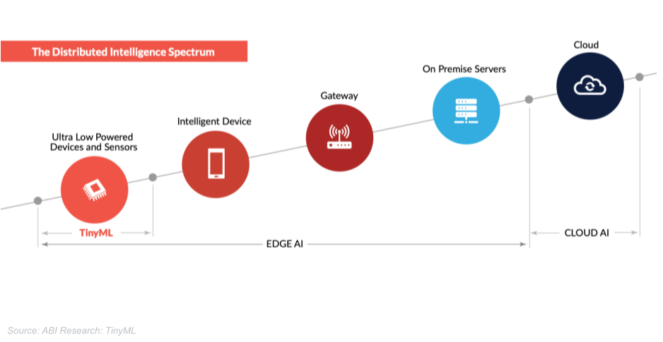

4 Embedded ML
Before we dive into the details of TinyML, understanding the nuances of Cloud ML, Edge ML, and TinyML is vital. To this end, in this chapter we examine each in its own first, and then compare and contrast them with each other.

4.1 Cloud ML
4.1.1 Characteristics
Cloud ML is a facet of the broader machine learning discipline that operates on cloud computing infrastructure. It essentially facilitates the development, training, and deployment of machine learning models on a virtual platform, offering both flexibility and scalability.
At its core, Cloud ML relies on a potent combination of high-capacity servers, vast storage solutions, and robust network architectures that are housed in data centers globally. This infrastructure permits the centralization of computational resources, making it easier to manage and scale machine learning projects seamlessly.
The cloud serves as a prolific environment for data processing and model training, equipped to handle extensive data loads and complex computations. Models developed under Cloud ML can be trained using a wealth of data, which is processed and analyzed in a centralized location, thereby optimizing the model’s learning and predictive capabilities.
4.1.2 Benefits
Cloud ML is synonymous with high computational power, capable of managing intricate algorithms and large datasets with finesse. This aspect is particularly beneficial in advancing machine learning models that require substantial computational resources, effectively bypassing the limitations of local setups.
One of the standout benefits of Cloud ML is the ability to scale resources dynamically based on project demands. This scalability ensures that as the data volume or computational needs escalate, the infrastructure can adapt accordingly without compromising performance.
Cloud ML platforms often provide access to a plethora of advanced tools and algorithms. Developers can leverage these resources to build, train, and deploy sophisticated models, accelerating the development cycle and fostering innovation.
4.1.3 Challenges
Despite its prowess, Cloud ML is often hampered by latency issues, particularly in applications necessitating real-time responses. The process of transmitting data to centralized servers and back can introduce delays, a critical drawback in time-sensitive applications.
Centralizing data processing and storage sometimes open up vulnerabilities in data privacy and security. The data centers become prime targets for cyber-attacks, necessitating significant investments in security infrastructure to safeguard sensitive information.
As the data processing needs grow, so do the costs associated with using cloud services. Organizations working with large data volumes may find escalating costs, which could potentially limit the scalability and feasibility of their operations over time.
4.1.4 Example Use Cases
Cloud ML has been instrumental in powering virtual assistants like Siri and Alexa. These systems leverage the cloud’s computational capabilities to process and analyze voice inputs, providing users with intelligent and personalized responses.
Cloud ML also forms the backbone of sophisticated recommendation systems seen in platforms like Netflix and Amazon. These systems analyze extensive datasets to discern patterns and preferences, delivering personalized content or product recommendations to enhance user engagement.
In the financial sector, Cloud ML has significantly contributed to the development of robust fraud detection systems. These systems analyze large swathes of transactional data to identify potential fraudulent activities, allowing for timely interventions and minimizing risks associated with financial frauds.
There are countless other examples of Cloud ML, but briefly, nowadays, it is impossible to get on the internet without interacting with some form of it, either directly or indirectly. From personalized advertisements that pop up on your social media feed to the predictive text functionality in email services, Cloud ML intricately weaves itself into the fabric of online experiences. It fuels the smart algorithms that suggest products on e-commerce websites, power search engines to deliver precise results, and even facilitate automatic tagging and categorization of photos on platforms like Facebook.
Moreover, Cloud ML enhances user security through anomaly detection systems that monitor for suspicious activities, potentially protecting users from cyber threats. In essence, it functions as the silent powerhouse, continually working behind the scenes to streamline, secure, and personalize our digital interactions, making the modern internet a more intuitive and user-friendly space.
4.2 Edge ML
4.2.1 Characteristics
Definition of Edge ML
Edge Machine Learning (Edge ML) refers to the deployment of machine learning algorithms directly on endpoint devices or closer to where the data is generated, instead of relying on centralized cloud servers. This approach aims to bring computation near the data source, thereby reducing the need to transmit large volumes of data over networks, which often leads to lower latency and enhanced data privacy.
Decentralized Data Processing
In an Edge ML setup, data processing occurs in a decentralized manner. Instead of sending data all the way to distant servers, the data is processed locally on devices like smartphones, tablets, or IoT devices. This localized processing means that devices can make swift decisions based on the data they collect, without relying heavily on a central server’s resources. This decentralization is critical in real-time applications where even a slight delay can have significant repercussions.
Local Data Storage and Computation
Local data storage and computation are hallmarks of Edge ML. This approach ensures that data can be stored and analyzed directly on the devices, thereby retaining the data’s privacy and reducing the reliance on continuous internet connectivity. Moreover, it can often lead to more efficient computation as data doesn’t have to travel over long distances, and the computations are performed with a more intimate understanding of the local context, which can sometimes lead to more insightful analyses.
4.2.2 Benefits
Reduced Latency
By virtue of processing data locally, Edge ML significantly reduces latency compared to Cloud ML. In scenarios where milliseconds matter, like in autonomous vehicles where rapid decision-making can mean the difference between safety and accident, the reduced latency can be a critical advantage.
Enhanced Data Privacy
Edge ML also offers enhanced data privacy as data is primarily stored and processed locally, minimizing the risk of data breaches that are more common in centralized data storage solutions. This means sensitive information can be kept more secure, as it’s not transmitted over networks where it might potentially be intercepted.
Less Bandwidth Usage
Operating on the edge means that less data needs to be transmitted over networks, thereby reducing bandwidth usage. This can lead to cost savings and efficiency improvements, particularly in environments where bandwidth is limited or expensive.
4.2.3 Challenges
Limited Computational Resources Compared to Cloud ML
However, Edge ML comes with its set of challenges. One of the primary concerns is the limited computational resources compared to cloud-based solutions. Endpoint devices may not have the same processing power or storage capacity as cloud servers, which can restrict the complexity of the machine learning models that can be deployed.
Complexity in Managing Edge Nodes
Managing a network of edge nodes can introduce complexity, particularly when it comes to coordination, updates, and maintenance. Ensuring that all nodes operate seamlessly and are up-to-date with the latest algorithms and security protocols can be a logistical challenge.
Security Concerns at the Edge Nodes
Despite the enhanced data privacy, edge nodes can sometimes be more vulnerable to physical and cyber-attacks. Developing robust security protocols that protect data at each node, without compromising the system’s efficiency, remains a significant challenge in the deployment of Edge ML solutions.
4.2.4 Example Use Cases
In highlighting use cases such as autonomous vehicles, smart homes and buildings, and industrial IoT, we aim to underscore the diverse range of environments where Edge ML can be a potent force. The below examples were chosen as they encapsulate scenarios where real-time data processing, reduced latency, and enhanced privacy are not just beneficial but often critical to the operation and success of these technologies. They serve to demonstrate the pivotal role that Edge ML can play in spearheading advancements in different sectors, fostering innovation, and paving the way for more intelligent, responsive, and adaptive systems.
Autonomous Vehicles
Autonomous vehicles stand as a beacon of Edge ML’s potential. These vehicles rely heavily on real-time data processing to navigate and make decisions. The localized machine learning models help in swiftly analyzing data from various sensors to make immediate driving decisions, essentially ensuring safety and smooth operation.
Smart Homes and Buildings
In the context of smart homes and buildings, Edge ML plays a vital role in managing various systems efficiently, from lighting and heating to security systems. By processing data locally, these systems can operate more responsively and in tune with the occupants’ habits and preferences, creating a more harmonized living environment.
Industrial IoT
Industrial Internet of Things (IoT) leverages Edge ML to monitor and control complex industrial processes. Here, machine learning models can analyze data from a plethora of sensors in real-time, facilitating predictive maintenance, optimizing operations, and improving safety measures, thereby bringing about a revolution in industrial automation and efficiency.
While the aforementioned cases offer a glimpse into the versatility and potential of Edge ML, it is crucial to note that its applicability is vast and not limited to these scenarios. Various other domains, including healthcare, agriculture, and urban planning, to name a few, are exploring and integrating Edge ML to develop solutions that are both innovative and responsive to real-world needs and challenges, heralding a new era of smart, interconnected systems.
4.3 Tiny ML
4.3.1 Characteristics
Definition of TinyML
TinyML stands at the intersection of embedded systems and machine learning, representing an emerging field that brings intelligent algorithms directly onto minuscule microcontrollers and sensors. These microcontrollers operate in environments characterized by severe resource constraints, particularly with respect to memory, storage, and computational power.
On-Device Machine Learning
In the realm of TinyML, the crux of operations lies in on-device machine learning. This means the machine learning models are not just deployed but also trained directly on the device itself, without relying on external servers or cloud infrastructures. By doing this, TinyML can facilitate intelligent decision-making right where the data is being generated, thereby making real-time insights and responses a possibility, even in environments where connectivity is limited or non-existent.
Low Power and Resource-Constrained Environments
TinyML thrives in low power and resource-constrained environments. These environments demand solutions that are highly optimized to function within the limited available resources. TinyML achieves this through specialized algorithms and models that are designed to deliver reasonable performance while consuming minimal energy, hence ensuring prolonged operational periods even in battery-powered devices.
4.3.2 Benefits
Extremely Low Latency
A defining benefit of TinyML is its capacity to offer extremely low latency. Given that the computation happens directly on the device, the time taken to transmit data to external servers and receive a response is eliminated. This becomes a critical advantage in applications where instantaneous decision-making is required, thereby facilitating rapid responses to changing conditions.
High Data Security
With TinyML, data security is inherently enhanced. Since data processing and analysis are confined to the device itself, the risk of data interception during transmission is practically nullified. This localized approach to data handling ensures that sensitive information remains confined to the device, thereby bolstering the security of user data.
Energy Efficiency
TinyML operates under a paradigm of energy efficiency, a necessity given the resource-constrained environments in which it functions. Through the implementation of lean algorithms and optimized computational methods, TinyML ensures that devices can perform complex tasks without draining battery life rapidly, making it a sustainable choice for long-term deployments.
4.3.3 Challenges
Limited Computational Capabilities
However, the transition to TinyML is not without challenges. The primary constraint lies in the limited computational capabilities of the devices. The need to function within constrained environments means that the models deployed must be simplified, potentially impacting the accuracy and sophistication of the solutions developed.
Complex Development Cycle
TinyML also introduces a complex development cycle. Creating models that are both lightweight and effective requires a deep understanding of machine learning principles, coupled with expertise in embedded systems. This complexity necessitates a collaborative approach to development, where expertise in multiple domains is a prerequisite for success.
Model Optimization and Compression
One of the central challenges in TinyML is model optimization and compression. Developing machine learning models that can function effectively within the limited memory and computational power of microcontrollers demands innovative approaches to model design and implementation. Developers are often tasked with striking a delicate balance, optimizing models to a point where they retain efficacy while fitting within the stringent resource constraints.
4.3.4 Example Use Cases
Wearable Devices
In the context of wearable devices, TinyML opens up possibilities for smarter, more responsive gadgets. From fitness trackers that can provide real-time feedback on your workouts to smart glasses that can process visual data on the go, TinyML is revolutionizing the way we interact with wearable technology, offering personalized experiences and insights directly from the device itself.
Predictive Maintenance
TinyML finds a significant role in predictive maintenance, particularly in industrial settings. By deploying TinyML algorithms on sensors and devices that monitor equipment health, companies can identify potential issues before they escalate, thereby reducing downtime and averting costly breakdowns. The ability to analyze data on-site ensures swift responses, potentially preventing minor issues from escalating into significant problems.
Anomaly detection
TinyML can be used to develop anomaly detection models that can identify unusual patterns in data. The best anomaly detection algorithm for a particular application will depend on the type of data and the desired outcome, but here are some examples of anomaly detection with TinyML. A smart factory could use TinyML to develop an anomaly detection model that can monitor industrial processes and identify unusual patterns in the data. This could help to prevent accidents and improve the quality of products. A security company could use TinyML to develop an anomaly detection model that can monitor network traffic and identify unusual patterns in the data. This could help to detect and prevent cyber attacks. A healthcare company could use TinyML to develop an anomaly detection model that can monitor patient data and identify unusual patterns in the data. This could help to detect diseases early and provide better treatment to patients.
Environmental Monitoring
In environmental monitoring, TinyML can facilitate the real-time analysis of data collected from various sensors deployed in the field. These could range from monitoring air quality in urban areas to tracking wildlife movements in protected areas. Through TinyML, data can be processed locally, enabling swift responses to changing conditions and providing a nuanced understanding of environmental patterns and trends, which is crucial for informed decision-making and policy formulation.
In essence, TinyML stands as a vanguard in the evolution of machine learning, fostering innovation in a myriad of fields by bringing intelligence directly to the edge, where data meets the real world. Its potential to revolutionize how we interact with technology and the world around us is immense, promising a future where devices are not just connected but also intelligent, capable of making decisions and responding to the environment in real-time.
TinyML stands as a vanguard in the evolution of machine learning, fostering innovation in a myriad of fields by bringing intelligence directly to the edge, where data meets the real world. Its potential to revolutionize how we interact with technology and the world around us is immense, promising a future where devices are not just connected but also intelligent, capable of making decisions and responding to the environment in real-time.
4.4 Comparison
Thus far, we have discussed each of the different ML variants in isolation. Now, let’s put them all together. Here’s a table that offers a comparative analysis of Cloud ML, Edge ML, and TinyML based on various features and aspects. It helps to provide a clear perspective on the distinguishing factors and unique advantages of each, helping in making informed decisions based on specific requirements and constraints for a given application or project.
| Feature/Aspect | Cloud ML | Edge ML | TinyML |
|---|---|---|---|
| Processing Location | Centralized servers (Data Centers) | Local devices (closer to data sources) | On-device (microcontrollers, embedded systems) |
| Latency | High (Depends on internet connectivity) | Moderate (Reduced latency compared to Cloud ML) | Low (Immediate processing without network delay) |
| Data Privacy | Moderate (Data transmitted over networks) | High (Data remains on local networks) | Very High (Data processed on-device, not transmitted) |
| Computational Power | High (Utilizes powerful data center infrastructure) | Moderate (Utilizes local device capabilities) | Low (Limited to the power of the embedded system) |
| Energy Consumption | High (Data centers consume significant energy) | Moderate (Less than data centers, more than TinyML) | Low (Highly energy-efficient, designed for low power) |
| Scalability | High (Easy to scale with additional server resources) | Moderate (Depends on local device capabilities) | Low (Limited by the hardware resources of the device) |
| Cost | High (Recurring costs for server usage, maintenance) | Variable (Depends on the complexity of local setup) | Low (Primarily upfront costs for hardware components) |
| Connectivity Dependence | High (Requires stable internet connectivity) | Low (Can operate with intermittent connectivity) | Very Low (Can operate without any network connectivity) |
| Real-time Processing | Moderate (Can be affected by network latency) | High (Capable of real-time processing locally) | Very High (Immediate processing with minimal latency) |
| Application Examples | Big Data Analysis, Virtual Assistants | Autonomous Vehicles, Smart Homes | Wearables, Sensor Networks |
| Development Complexity | Moderate to High (Requires knowledge in cloud computing) | Moderate (Requires knowledge in local network setup) | Moderate to High (Requires expertise in embedded systems) |
The table delineates a comparative analysis of these three paradigms, highlighting the distinctions in processing location, latency, data privacy, computational power, energy consumption, scalability, cost, connectivity dependence, real-time processing capabilities, and application examples. Cloud ML, centralized and power-abundant, stands as a giant in computational prowess but may face hurdles in latency and energy consumption. Edge ML emerges as a bridge, offering moderate computational power with reduced latency, situated closer to the data sources, thus ensuring heightened data privacy. TinyML, the newest entrant, operates on constrained devices, excelling in low-energy consumption and on-device processing, promising significant strides in applications like wearables and sensor networks. This table serves as a roadmap for enthusiasts and professionals alike, offering a panoramic view of the attributes and capabilities of each paradigm, aiding in the selection of the most suitable approach for specific project requirements.
4.5 Evolution Timeline
4.5.1 Late 1990s - Early 2000s: Birth of Wireless Sensor Networks
During the late 1990s and early 2000s, wireless sensor networks (WSNs) emerged as a significant milestone in the field of information technology. These networks comprised sensor nodes capable of collecting and transmitting data wirelessly. With the ability to monitor a variety of environmental conditions such as temperature, humidity, and light, WSNs found applications in various fields including industrial automation, healthcare, and environmental monitoring. This period saw the development of initial standardized protocols like Zigbee, facilitating secure and reliable data transmission in WSNs.
4.5.2 Mid-2000s: Internet of Things (IoT) Emergence
As we moved into the mid-2000s, the concept of the Internet of Things (IoT) started to take shape. IoT extended the principles of WSNs, interconnecting various devices and allowing them to communicate and share data over the internet. The integration of embedded systems in IoT devices enabled smarter operations, with devices now capable of not just collecting data but also processing it to make intelligent decisions. This period saw the proliferation of smart homes and industrial IoT, revolutionizing the way we interact with devices and systems in our surroundings.
4.5.3 Late 2000s - Early 2010s: Smartphone Revolution & Mobile Computing
The late 2000s saw the advent of the smartphone revolution, which significantly influenced the evolution of embedded systems. Smartphones became powerful computing devices equipped with various sensors and embedded systems capable of performing complex tasks. The integration of embedded systems into smartphones laid the groundwork for mobile computing, with applications spanning from gaming to navigation and health monitoring.
4.5.4 Mid-2010s: Big Data & Edge Computing
By the mid-2010s, the sheer volume of data generated by interconnected devices necessitated new approaches to data processing. Big Data technologies emerged to handle this influx of data, and concurrently, the concept of edge computing began gaining traction. Edge computing brought data processing capabilities closer to the source of data, minimizing latency and bandwidth use. Embedded systems evolved to support edge computing, with devices now capable of performing substantial data processing locally, reducing the dependence on centralized data centers.
4.5.5 Late 2010s - Early 2020s: Machine Learning & AI Integration
Towards the end of the 2010s and into the early 2020s, machine learning and AI started becoming integral components of embedded systems. The integration of AI capabilities into embedded systems facilitated the development of smart devices with improved decision-making and predictive capabilities. This period saw advancements in natural language processing, computer vision, and predictive analytics, with embedded systems now capable of supporting complex AI algorithms and applications.
4.5.6 Early 2020s: Advent of tinyML
As we entered the 2020s, the field witnessed the advent of tiny Machine Learning (tinyML), a development that brought machine learning capabilities to ultra-low power microcontrollers. TinyML enabled the deployment of ML models directly onto small embedded devices, allowing for intelligent data processing at the edge, even on devices with limited computational resources. This has opened up new possibilities for IoT devices, making them smarter and more autonomous than ever before.
4.5.7 2023 and Beyond: Towards a Ubiquitous Embedded AI Era
As we progress further into this decade, we anticipate a transformative phase in the landscape of technology where embedded AI and TinyML evolves from being a noteworthy innovation to a pervasive force integral to our technological infrastructures, thus ushering in an era of ubiquitous embedded AI. The horizon of embedded AI is massive and expansive, potentially bringing us a future where the boundaries between artificial intelligence and daily functionalities become increasingly blurred, fostering a new era of innovation and efficiency.